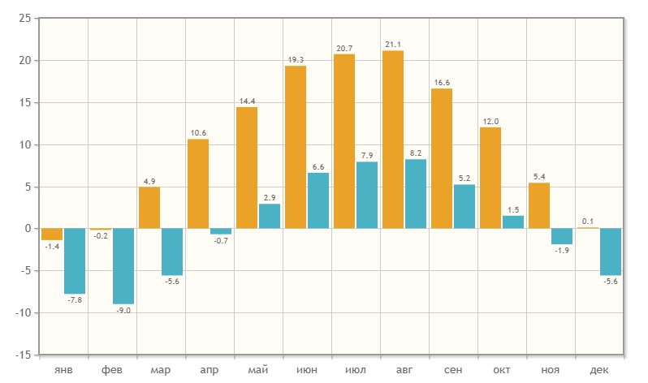

About city
Innsbruck is one of the best ski resorts in Austria.
The city itself is situated in the Inn River valley, right at the foot of the Eastern Alps. Consequently, it is almost impossible to find a spot in the city where the mountains are not visible.
Innsbruck in numbers.
- Population: just over 130,000
- Time zone: UTC+1 in winter and UTC+2 in summer
- Ski areas: 9, all interconnected by transport links
- Elevation range: 860 m – 3,100 m
- Season duration: December through April
- Visitor age: 2 years and older (no upper age limit).
Monthly temperatures
